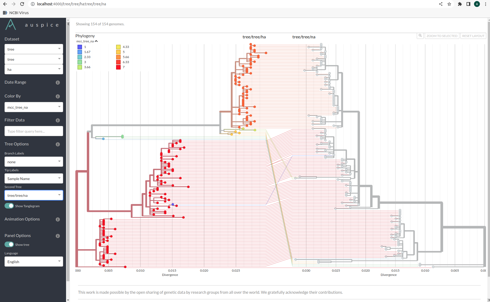

Visualizing MCCs
Visualizing the ARG
IcyTree (Vaughan, T. G., IcyTree: Rapid browser-based visualization for phlogenetic trees and networks. Bioinformatics 2017. DOI: 10.1093/bioinformatics/btx155) is an in-browser application that can be used to view ARGs. Just drag and drop the extended newick file obtained from TreeKnit and see the results.
A TreeKnit visualization app is also under development. It should visualize ARGs in a similar manner to IcyTree, but with colored tree segment annotations. The prototype can be used to visualize ARG results.
Visualizing MCCs using a tanglegram in Auspice
Tanglegrams are an excellent way to view reassortment events between trees. In a tanglegram two trees are joint at the leaves and viewed facing each other. Auspice is an excellent option for visualizing tanglegrams of large trees as it can uniquely color different MCCs allowing for easy comparison of tree topologies. Viewing tanglegrams in Auspice with MCC colorings requires specific files, which will be generated when TreeKnit is run with the --auspice-view argument.
In julia these files can be produced using the command: TreeKnit.write_auspice_json(filepath::String, tree1::Tree{T}, tree2::Tree{T}, MCCs::Vector{Vector{String}}).
This command will return JSON files with the naming convention: "auspice_{tree.label}.json" for each tree. Each tree can viewed separately by dragging and dropping the corresponding file into https://auspice.us/. Two trees can be viewed as together as a tanglegram by selecting them together and dragging and dropping them into the auspice browser. The trees can then be colored with the desired MCCs, these can be chosen by selecting them from the color by menu at the left hand side of the browser. MCCs are labeled as mcc_x_y, where x and y are the labels of tree1 and tree2 in alphabetical order.
The resulting tanglegram for the NY data set should look as follows:
